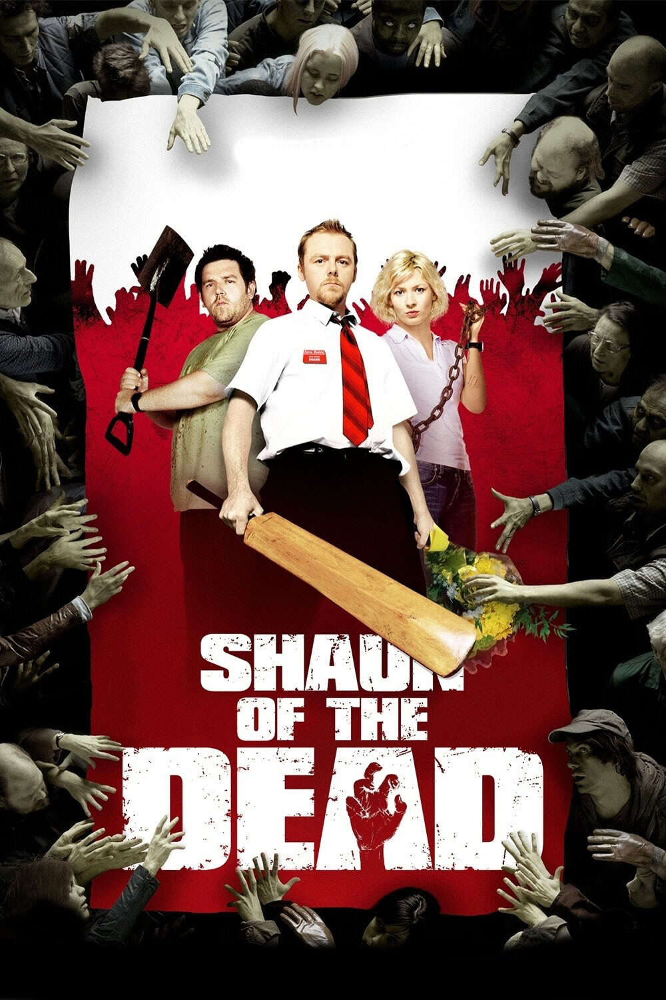

Please enter a movie
Please choose the movie you mentioned
Manchester by the Sea
After his older brother passes away, Lee Chandler is forced to return home to care for his 16-year-old nephew. There he is compelled to deal with a tragic past that separated him from his family and the community where he was born and raised.Reservoir Dogs
A botched robbery indicates a police informant, and the pressure mounts in the aftermath at a warehouse. Crime begets violence as the survivors – veteran Mr. White, newcomer Mr. Orange, psychopathic parolee Mr. Blonde, bickering weasel Mr. Pink and Nice Guy Eddie – unravel.

Shaun of the Dead
Shaun lives a supremely uneventful life, which revolves around his girlfriend, his mother, and, above all, his local pub. This gentle routine is threatened when the dead return to life and make strenuous attempts to snack on ordinary Londoners.Superbad
Two co-dependent high school seniors are forced to deal with separation anxiety after their plan to stage a booze-soaked party goes awry.